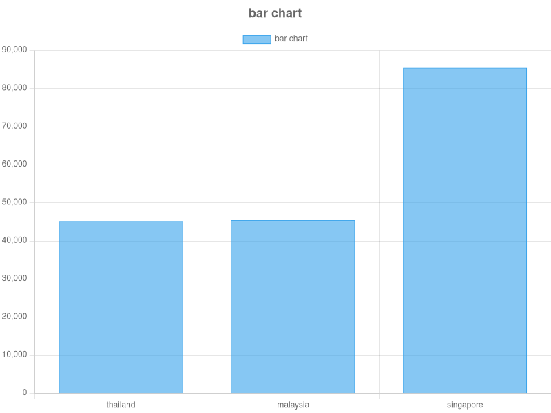
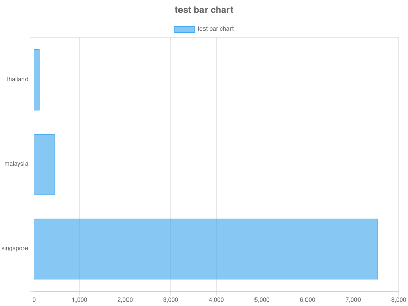
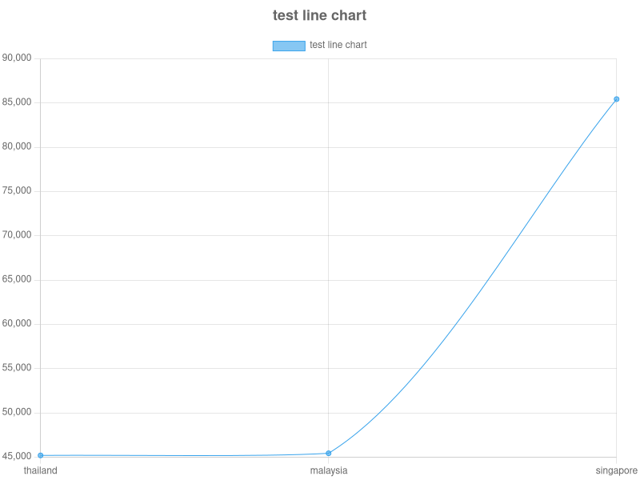
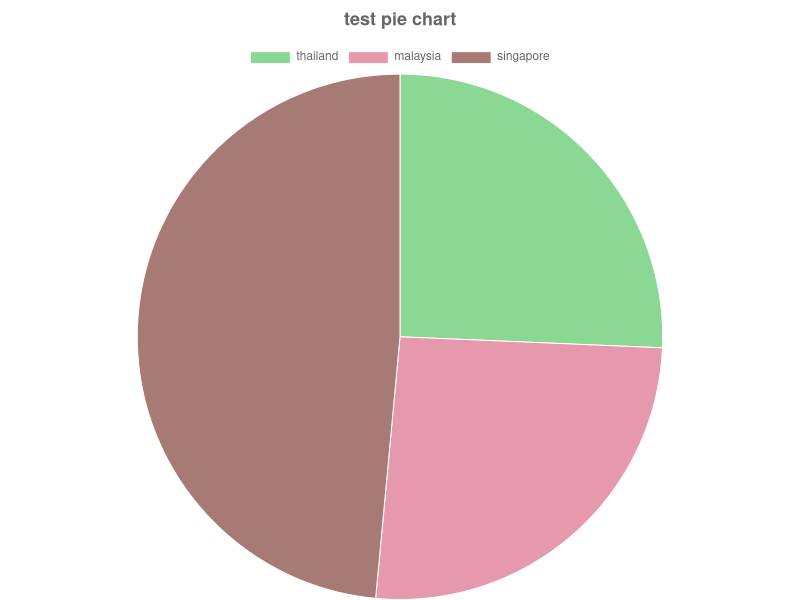
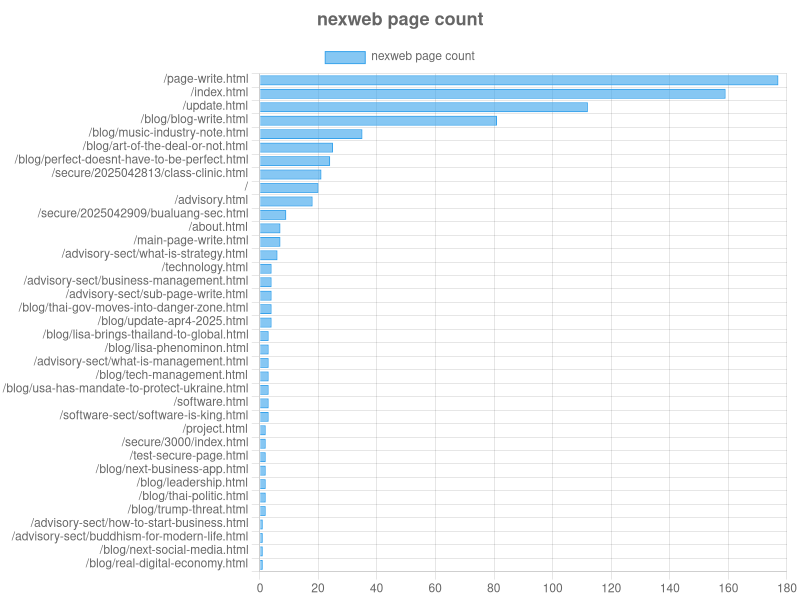
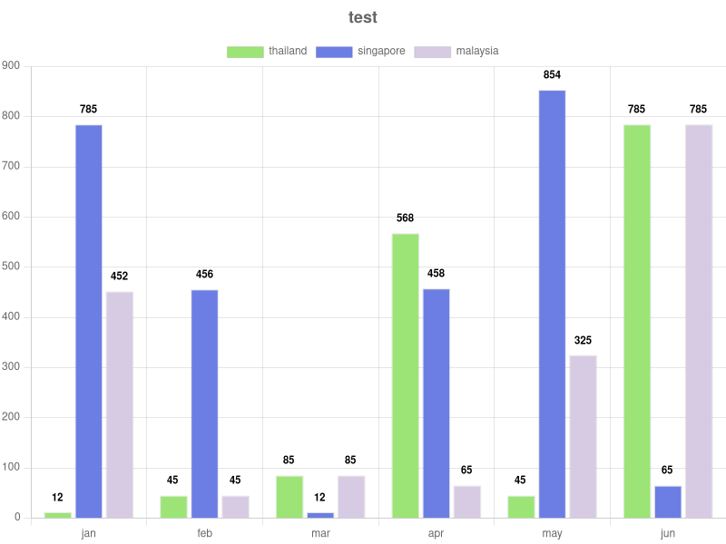
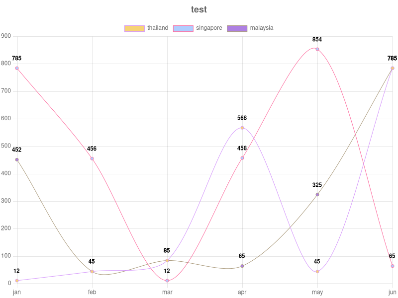

--Fri May 02 2025 13:31:54 GMT+0700 (Indochina Time) version=1.0.0 author=@devster
this is a simple nodejs program to make charts. Drawing right now the bar (default), bar-h (horizontal bar), line and pie charts.
$ ./x-chart.js data.json "title of the chart" bar*|bar-h|line|pie [visit-data]
the 'must be there' parameters are: data.json and the "chart title"
the bar is default, if you didn't put it, it becomes bar
the visit-data if you didn't put it, it will regard the data as raw/normal format. If you put it, the program regards it is the nexweb's visiting data format
just added a new parameter hide-datalabel so now we can hide the datalabel because sometimes on a line chart that showing time-base data like stock index/values, showing datalabel is headache. So do this:
$ ./x-chart.js data.json "title..." line std hide-datalabel
the std is set when you not put visit-data and then we put hide-datalabel to let x-chart hide it. That's it.
for 1 dataset:
{
x: ["thailand","malaysia","singapore",...],
y: [425421, 46542, 784542]
}
for multiple datasets:
{
"x": ["jan","feb","mar","apr","may","jun"],
"datasets":[
{
"label":"thailand",
"data":[12,45,85,568,45,785]
},
{
"label":"singapore",
"data":[785,456,12,458,854,65]
},
{
"label":"malaysia",
"data":[452,45,85,65,325,785]
}
]
}
you have to have these things:
so, in short, these are installation steps:
(in ubuntu bash)
$ sudo apt update
$ sudo apt install nodejs npm
$ mkdir your-dir
$ cp make-chart-from.js your-dir
$ cd your-dir
$ npm init
$ npm install fs path chartjs-node-canvas chartjs-module-datalabels
then once all finished no problem, you can start making charts.





we've just lately adding the datalabel into the chart so you now see things like:


if you want to process something about data, you can do it in this file prep-data.js like:
return {
x: input_data.map(v => v.date),
y: input_data.map(v => v.value)
}
this is a raw, no fancy thing, program just to make a quick chart, from command line. Platform here is Ubuntu, not test in other thing yet.
Happy using it, hope it helps a little :-D